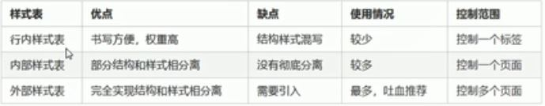

三大类：行内式样式表，内部样式表，外部样式表
内部样式表是写在html文件内部，抽离全部CSS代码单独放到style标签中，练习中常用;
行内样式表：写在元素标签内部的style属性，适合于修改简单样式;
外部样式表：开发中常用，样式单独写在CSS文件中，之后引入CSS文件到html文件里，方法：在html中head标签前面用《link rel="stylesheet" href="css文件路径"》
CSS引入方式总结
